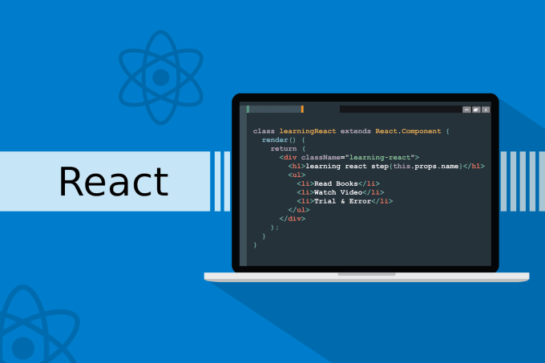

Introduction to React
React
What is React?
React, developed and maintained by Facebook, is a powerful JavaScript library for building user interfaces. It is particularly renowned for its efficiency in creating interactive, dynamic, and responsive web applications. React follows a component-based architecture, allowing developers to build encapsulated and reusable UI components, making the development process more modular and scalable. In the context of the MERN stack, React plays a pivotal role as the frontend library. The MERN stack is a full-stack JavaScript framework used for building modern web applications, providing a seamless and unified development experience from the database to the user interface.
Significance of React in the MERN stack
-
• Component based architecture: Developers can create individual components for different parts of the application, making it easier to manage, debug, and scale the codebase.
-
• Declarative and Efficient UI: React's declarative syntax allows developers to describe the desired outcome, and React takes care of updating and rendering the components efficiently making it easier to understand, debug, and optimize code, enhancing the overall performance of MERN stack applications.
-
• Virtual DOM (Document Object Model): The Virtual DOM optimizes the rendering process by updating only the components that have changed, reducing the need to manipulate the entire DOM resulting in faster and more efficient updates, crucial for creating responsive and dynamic user interfaces.
-
• Reusability and Maintainability: Prompted by its component based structure, developers can create modular components and reuse them across different parts of the application, leading to cleaner code and easier maintenance especially for large scale projects.
-
• React Ecosystem: Having a vibrant ecosystem with a vast collection of libraries and tools that enhance development productivity like Redux and React Router help provide solutions for common challenges in web development.
Overview
In conclusion, React is a fundamental building block in the MERN stack, contributing to the development of efficient, scalable, and maintainable web applications. Its component-based architecture, declarative syntax, Virtual DOM, and rich ecosystem make it an indispensable tool for frontend development within the MERN stack.
< Home Next >